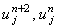
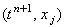
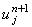
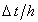
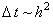
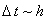

|
4.2. Определение порядка аппроксимации разностной схемы Саульева
Рассмотрим сумму соотношений (4.21) и (4.22),
делённую пополам:
Разложим значения  в ряд Тейлора относительно точки :
Исходя из этих соотношений, среднее арифметическое значений ,
используемое в (4.23), можно аппроксимировать значением  со вторым порядком аппроксимации
по времени:
Подставляя данную формулу в (4.23), получаем:
Разностный оператор, стоящий в левой части выражения
(4.24), по отношению к точке , т.е. к точке, для которой записана правая часть этого же
выражения, является центральной конечной разностью, имеющей, как известно,
второй порядок аппроксимации. Следовательно, разностная схема Саульева аппроксимирует
уравнение (4.19) со вторым порядком и по времени, и по координате:
Однако второе слагаемое в правой части выражения (4.24) вносит дополнительный вклад в
ошибку аппроксимации. Поэтому реально точность результатов, получаемых при использовании
разностной схемы Саульева, будет зависеть от выбора величин шагов по времени и координате х,
а точнее от порядка отношения .
При  погрешность, вносимая вторым слагаемым в правой части
выражения (4.24), будет сопоставима с погрешностью, вносимой аппроксимацией производных.
Если же , то точных результатов мы не получим.
Завершая анализ погрешности, создаваемой
разностной схемой Саульева, и переходя к рассмотрению метода её решения, следует отметить,
что данная разностная схема является абсолютно устойчивой (примем этот факт без
доказательства), однако её аппроксимация сама накладывает ограничение на выбор интервала
деления на разностной сетке.
|